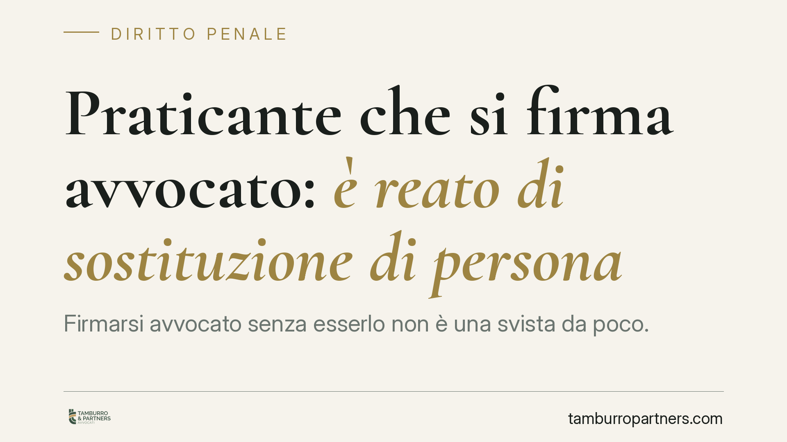

Praticante che si firma "avvocato": è reato di sostituzione di persona
Firmarsi "avvocato" senza esserlo non è una svista da poco. La Cassazione ha stabilito che il praticante che si attribuisce il titolo prima dell'abilitazione commette il reato di sostituzione di persona previsto dall'art. 494 del codice penale. Non serve aver esercitato attività professionale né aver ricavato un profitto: basta l'attribuzione falsa di una qualità.

Il fatto
Un praticante avvocato aveva sottoscritto atti e comunicazioni qualificandosi come "avvocato", pur non avendo ancora superato l'esame di Stato e non essendo iscritto all'albo. La difesa sosteneva che, in assenza di un vantaggio concreto e di un'attività professionale effettivamente svolta, il comportamento fosse penalmente irrilevante. La Corte di Cassazione ha respinto questa lettura, confermando la configurabilità del reato.
Inquadramento normativo
L'art. 494 del codice penale punisce chi, "al fine di procurare a sé o ad altri un vantaggio o di recare ad altri un danno, induce taluno in errore, sostituendo illegittimamente la propria all'altrui persona, o attribuendo a sé o ad altri un falso nome, o un falso stato, ovvero una qualità a cui la legge attribuisce effetti giuridici".
Il punto centrale è l'ultima ipotesi: l'attribuzione a sé di una qualità cui la legge riconosce effetti giuridici. Il titolo di avvocato non è una mera etichetta: presuppone abilitazione, iscrizione all'albo e produce effetti giuridici precisi (capacità di rappresentare in giudizio, obblighi deontologici, poteri di certificazione). Attribuirsi tale qualità senza averla equivale, per la Corte, a integrare la condotta tipica.
La Cassazione ha inoltre chiarito la natura del cosiddetto dolo specifico richiesto dalla norma. Il "fine di vantaggio" non va inteso in senso strettamente patrimoniale. È sufficiente un vantaggio anche solo morale o di posizione: presentarsi come professionista abilitato per acquisire credibilità, autorevolezza o considerazione costituisce già il vantaggio richiesto dalla legge. Non occorre dimostrare un guadagno economico né l'effettivo compimento di atti riservati all'avvocato.
Implicazioni pratiche
La decisione ha ricadute concrete per chi svolge il tirocinio forense. Il praticante ha una qualifica propria e distinta — quella, appunto, di "praticante avvocato" — che va indicata correttamente in ogni contesto formale e informale.
L'errore più frequente non nasce da un intento fraudolento, ma da leggerezza: la firma in calce a un'email, l'intestazione di una carta, la qualifica su un profilo social o su un biglietto da visita. La Corte ha però ancorato il reato all'attribuzione della falsa qualità in sé, prescindendo dalle intenzioni soggettive di truffare qualcuno. Questo abbassa notevolmente la soglia di rischio.
Attenzione anche alla fase del cosiddetto patrocinio sostitutivo. Il praticante abilitato al patrocinio ha facoltà limitate e definite dalla legge: qualificarsi genericamente come "avvocato" travalica quei limiti e può esporre a conseguenze penali, oltre che disciplinari.
È opportuno ricordare che alla contestazione penale si affianca quasi sempre un profilo deontologico. La condotta può rilevare in sede disciplinare e incidere sul giudizio di compiuta pratica o sulla successiva iscrizione all'albo.
Cosa fare in concreto
- Verifica ogni firma e ogni intestazione. Indica sempre e solo la qualifica di "praticante avvocato" o "praticante avvocato abilitato al patrocinio", mai "avvocato" secco.
- Controlla i canali digitali. Aggiorna profili LinkedIn, firme email, biglietti da visita e siti personali: la qualifica errata online è facilmente documentabile.
- Non ampliare i poteri del patrocinio sostitutivo. Se sei abilitato al patrocinio, muoviti nei limiti previsti dalla legge e dichiara la tua reale posizione in udienza e negli atti.
- Correggi subito eventuali errori pregressi. Se ti sei qualificato in modo scorretto, rettifica per iscritto e conserva traccia della correzione.
- In caso di contestazione, non sottovalutarla. Rivolgiti a un legale prima di rendere dichiarazioni: il profilo penale e quello disciplinare vanno gestiti insieme.
Una nota di equilibrio
La pronuncia non criminalizza il tirocinio né trasforma ogni imprecisione in reato. Sottolinea però che la qualifica professionale ha un valore giuridico che va rispettato con rigore. Per chi si affaccia alla professione, la precisione nell'identificarsi non è formalismo: è la prima forma di serietà professionale.
---
*Contributo informativo a cura di Tamburro & Partners - Avv. Giuseppe Tamburro. Non costituisce parere legale.*
Ogni condominio ha una storia a sé.
Se gestisci un'amministrazione e vuoi un confronto su una specifica questione condominiale, scrivi allo studio. Ti rispondiamo entro un giorno lavorativo.